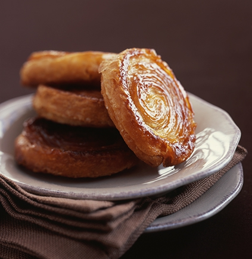

Kouign Amann

Ingredients
- 550 g bread flour
- 15 g of Guérande Salt
- 10 g yeast
- 500 g melted butter
- 450 g caster sugar
Steps
- Recipe for two large cakes serving 8people for 25 individual cakes.
- Mix the flour, salt, yeast, 20g of melted butter
- Add 350g of water to obtain an homenous texture.
- Leave pastry to rest (rise) for approx. 30 mins at room temperature (20-22°C).
- Roll out the pastry, place a 450g square of butter in the centre and fold the pastry over it. Leave to cool for 20 mins in the fridge.
- oll out lengthways and fold into three as you would to make puff pastry (one fold).
- Leave for an hour in a cool place in cling film.
- Repeat the operation, adding the caster sugar. Fold the pastry once. Leave to stand again for 30 mins in a cool place. Roll out the pastry to a 4mm thickness and cut into 8cm squares.
- Place the pastry into circular moulds that have been greased and dusted with sugar, folding the corners in to the centre and then place these on a greased, sugared non-stick tray.
- Leave to rise for approx. 1hr30 at 24-26°C, during which the pastry should increase by half its volume. Bake for 40 mins at 180°C.
Author: Pierre HERME,
Photo: Mixture